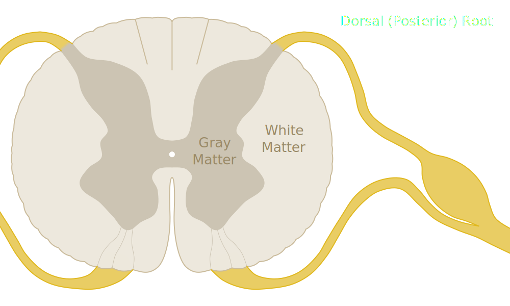
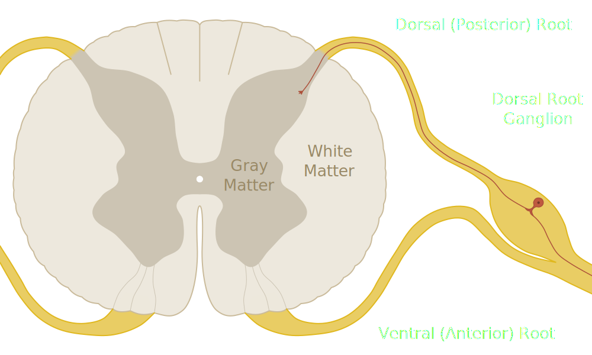
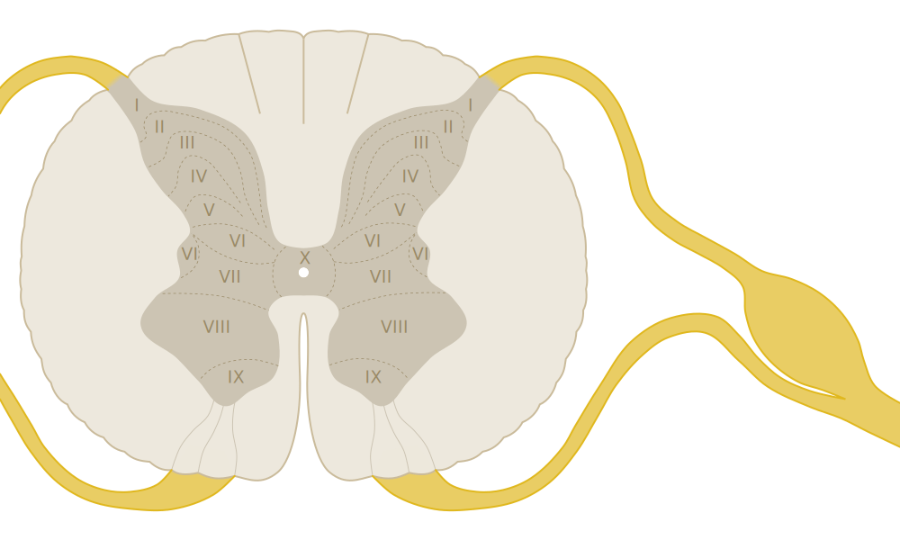
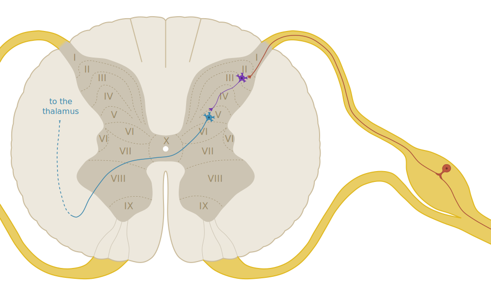
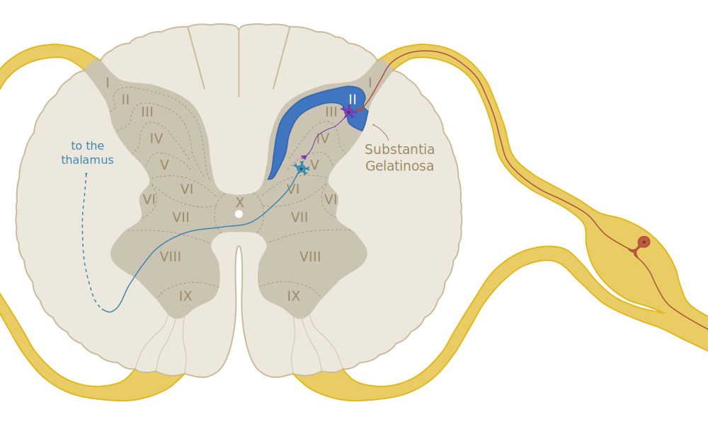
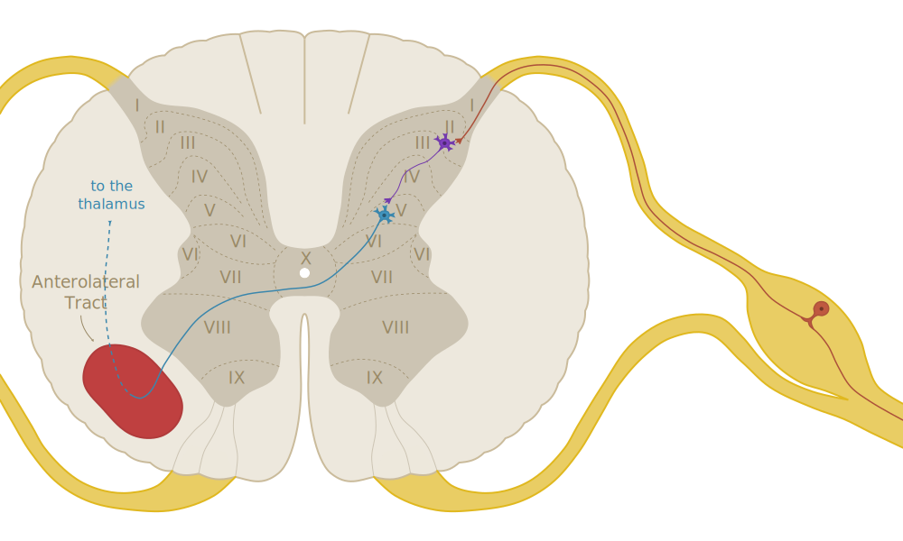

### Pain Response #### (Chapter 32)
## Question 1 --- Describe the four stages of pain processing.
transduction <div class="fragment fade-up"><p>↓</p><p>transmission</p></div> <div class="fragment fade-up"><p>↓</p><p>perception</p></div> <div class="fragment fade-up"><p>↓</p><p>modulation</p></div>
**Transduction** is the **creation** of an electrical pain signal in the free nerve endings of a **nociceptor**. <p class="fragment fade-up">A noxious stimulus (heat, cold, mechanical pain) creates a <b>graded potiential</b> which, if intense enough, will trigger an <b>action potential</b>, leading to...</p>
**Transmission**, in which the action potential travels down the length of the nerve, entering the spinal cord and then traveling upward to the brain. <p class="fragment fade-up">Once it arrives in the brain...</p>
**Perception** occurs, in which the brain actually perceives or feels the sensation of pain. <p class="fragment fade-up">After the signal is received and processed in the brain...</p>
The final step, **modulation**, kicks in. <p class="fragment fade-up">The brain sends a signal <b>back down</b> the spine, causing the release of endogenous opioids which inhibit the pain signal at synapses <b>in the spinal cord</b>.</p>
## Question 2 --- Why are these stages useful?
Understanding the four stages of pain processing is useful because they present us with the possible avenues of pain **treatment** and **prevention**.
You can: <ul> <li class="fragment fade-up">Block the signal from being created (at the source) <li class="fragment fade-up">Intercept or block the signal during transmission <li class="fragment fade-up">Alter the perception of the signal in the brain </ul> <p style="font-size:0.75em;" class="fragment fade-up">(We'll go into more depth on this with question 24.)</p>
## Question 3 --- Describe the mechanism of action of non-steroidal anti-inflammatory drugs (NSAIDs) in relief from pain.
**Prostaglandins** are a type of chemical produced throuhout the body which play a vital role in the body's inflammatory response, producing pain, swelling, and vasodilation. <p class="fragment fade-up">They contribute to pain <b>transduction</b> by altering the membrane potential of nociceptors.</p>
Prostaglandins are produced by a pair of enzymes known as **cyclooxygenases** (COX-1 and COX-2,) which create them from the precursor **arachidonic acid**. <p class="fragment fade-up">NSAIDs block the action of one or both of these COX enzymes, reducing the body's ability to produce prostaglandins.</p> <p style="font-size:0.75em;" class="fragment fade-up">(Most NSAIDs block both, but a few, such as celecoxib (Celebrex) block only COX-2. You'll talk about this more in pharm.)</p>
## Question 4 --- Describe the two types of pain fibers. What types of pain do they subserve?
Two types of nerve fibers involved in pain response: <p class="fragment fade-up"><b>Aδ (A-delta) fibers</b> are <b>thicker</b>, <b>myelinated</b> neurons, meaning <b>low resistance</b> and <b>super fast</b> transmission.</p> <p class="fragment fade-up"><b>C fibers</b> are <b>thinner</b> and <b>unmyelinated</b>, meaning the action potential travels <b>much more slowly</b>.</p>
Myelinated **Aδ fibers** enable **immediate response** to a stimulus by triggering quickly and getting the signal to the brain **as fast as possible**. <p class="fragment fade-up">They are usually associated with a sharp, stinging or burning sensation.</p>
Unmyelinated **C fibers**, which are much more numerous, provide a **low, ongoing response** to a persistent stimulus. <p class="fragment fade-up">They are usually associated with a dull, ongoing soreness or aching sensation.</p>
Example: When you get an injection, your Aδ fibers transmit the immediate "ouch." Your C fibers are the dull, sore sensation that lingers afterward.
## Question 5 --- Where do the pain fibers enter the spinal cord? What is the major neurotransmitter released by pain fibers?
First, let's review some A&P...
 <p style="font-size:0.75em;">Remember that sensory (afferent) nerves enter through the <b>dorsal root</b>...</p>
<p style="font-size:0.75em;">and motor (efferent) nerves exit through the <b>ventral root</b>.</p>
 <p style="font-size:0.75em;">Nociceptors are <b>pseudo-unipolar neurons</b> in the <b>dorsal root ganglia</b>.</p>
Pain signals originate from **free nerve endings** at the end of the nociceptor's dendrite, and travel along the dendrite towards the CNS. <p class="fragment fade-up">They then follow the axon through the <b>dorsal (posterior) root</b> and enter the gray matter of the spinal cord.</b>
The major **excitatory** neurotransmitter of sensory nerves (including nociceptors) is **glutamate**. <p class="fragment fade-up">Many other neurotransmitters are involved in pain tranmission, both excitatory (e.g. Substance P, CGRP) and inhibitory (e.g. γ-aminobutyric acid/GABA.)
One thing to know about glutamate: <p class="fragment fade-up">Repeated, long-term exposure of C fibers to glutamate can cause them to become <b>more sensitive</b>, leading to chronic pain <b>even after the stimulus is removed</b>. <p class="fragment fade-up">This condition is referred to as <b>central sensitization</b> or the "<b>wind-up phenomenon</b>."
## Question 6 --- Which area of the spinal cord can enhance or inhibit pain?
 <p style="font-size:0.75em;">The gray matter of the spinal cord is divided into 10 areas called <b>laminae</b>.</p>
 <p style="font-size:0.75em;">Nociceptors synapse with second-order neurons and interneurons in laminae I, II, and V.</p>
 <p style="font-size:0.75em;">Pain modulation primarily occurs in lamina II, the <b>substantia gelatinosa</b>.</p>
## Question 7 --- Describe the difference between the neospinothamalic and paleospinothalamic tracts.
 <p style="font-size:0.75em;">Both <b>spinothalamic tracts</b> are found in the <b>anterolateral white column</b>.</p>
The **neospinothamalic** division carries signals from **Aδ** (fast) fibers towards the cerebral cortex, synapsing again in the thalamus. <p class="fragment fade-up">The <b>paleospinothalamic</b> division carries signals from <b>C</b> (slow) fibers to various destinations in the midbrain.</p>
## Question 8 --- Which lamina of the spinal cord dorsal horn gray matter is involved in referred pain?
<p style="font-size:0.75em;">Referred pain originates in lamina V. Why does referred pain occur?</p>
Neurons synapsing in lamina V have "**wide dynamic range**," meaning they transmit a wide range of visceral and somatic sensory signals. <p class="fragment fade-up">This can lead to neurons getting cross-wired and visceral pain being interpreted as somatic pain.</p>
## Question 9 --- At what level of the brain is pain interpreted?
The sensation and quality of pain are interpreted in the **primary sensory cortex**. Remember that this is the final destination of the **neospinothalamic tract**. <p class="fragment fade-up">In contrast, the <b>midbrain</b> controls only the conscious awareness of pain, not interpretation.</p>
## Question 10 --- Dermatomal maps help which function in pain?
**Dermatomal maps** provide a layout of which areas of the body are innervated by neurons from each level of the spinal column. <p class="fragment fade-up">This is useful for determining the source of <b>neuropathic</b> pain.</p> <p class="fragment fade-up">If you determine where it <b>feels</b> like the pain is coming from, you can determine which nerves are involved.</p>
## Question 11 --- Distinguish between pain tolerance and pain expression.
**pain tolerance** - how much pain you can **internally** handle <p style="font-size:0.75em;" class="fragment fade-up">(How much pain does it take before it becomes unbearable and you seek relief?)</p>
**pain expression** - how do you externally display or communicate your pain to others?</p> <p class="fragment fade-up"><b>Both</b> of these vary widely from person to person, and pain expression also has a strong <b>cultural aspect</b>.</p>
## Question 12 --- Describe presynaptic inhibition of pain. Which neurotransmitter is involved?
**Presynaptic inhibition** occurs when a **first-order neuron** is prevented from transmitting its signals to a second-order neuron or interneuron. <p class="fragment fade-up"><b>Opioids</b> such as β-endorphin and enkephalins play a role, as does the neurotransmitter γ-aminobutyric acid (GABA.)</p>
## Question 13 --- Describe the gate control theory of pain relief.
Thick **Aβ fibers** linked to **touch** receptors can **take priority** over Aδ/C pain signals when stimulated. <p class="fragment fade-up"><b>Gate control theory</b> states that pain can be reduced by providing an additional, non-noxious stimulus to trigger Aβ fibers and cut off pain transmission.</p>
## Question 14 --- What are the names of the endogenous and exogenous opioids?
First, what *are* endogenous and exogenous opioids? <p class="fragment fade-up"><b>endogenous opioids</b> – opioids produced <b>internally</b> by the body</p> <p class="fragment fade-up"><b>exogenous opioids</b> – <b>external</b> opioids introduced to the body, e.g. as drug therapy</p>
Examples: <p class="fragment fade-up"><b>endogenous opioids</b> – endorphins, enkephalins</p> <p style="font-size:0.75em;" class="fragment fade-up">(endorphins = "endogenous morphine")</p> <p class="fragment fade-up"><b>exogenous opioids</b> – morphine, codeine, hydrocodone, methadone, etc.</p>
## Question 15 --- Which of the opioid receptors provide analgesia?
There are four types of opioid receptors in the CNS: <ul> <li class="fragment fade-up" data-fragment-index="0">μ (mu)<span class="fragment fade-up" data-fragment-index="4"> ← ⭐</span></li> <li class="fragment fade-up" data-fragment-index="1">κ (kappa)<span class="fragment fade-up" data-fragment-index="4"> ← ⭐</span></li> <li class="fragment fade-up" data-fragment-index="2">σ (sigma)</li> <li class="fragment fade-up" data-fragment-index="3">δ (delta)</li> </li> <p class="fragment fade-up" data-fragment-index="4"><b>μ (mu)</b> and <b>κ (kappa)</b> are the two involved in pain modulation.</p>
## Question 16 --- Pain is classified according to three criteria. What are they?
**duration** – is it **acute** or **chronic**? <p class="fragment fade-up"><b>source</b> – neuropathic, ischemic, somatic, visceral, etc.</p> <p class="fragment fade-up"><b>location</b> – where is the pain being experienced?</p>
## Question 17 --- What is fibromyalgia? Describe it.
A chronic disease characterized by **widespread musculoskeletal pain** and **extreme tenderness** at specific areas of the body. <p class="fragment fade-up"><b>Allodynia</b>, which we'll talk about in a second, is a typical symptom of fibromyalgia.</p>
## Question 18 --- How does cancer cause pain?
There are many mechanisms, any of which can be considered "cancer-related" pain. They can include: <ul> <li class="fragment fade-up">Infiltration of organs by cancerous growth</li> <li class="fragment fade-up">Pressure on nerves from a tumor (neuropathic)</li> <li class="fragment fade-up">Pain secondary to cancer treatment (iatrogenic)</li> </ul>
## Question 19 --- How is neuropathic pain different from tissue injury pain?
Most (somatic/visceral) pain signals **damage to tissues**. <p class="fragment fade-up">In <b>neuropathic pain</b>, the <b>nerve itself</b> is the source of the pain, rather than responding to an external stimulus.</p> <p class="fragment fade-up">Neuropathic pain often has a shooting/burning quality and radiates along the path of the nerve.</p>
Examples include: <p class="fragment fade-up"><b>sciatica</b> – neuropathy due to impingement of sciatic nerve</p> <p class="fragment fade-up"><b>trigeminal neuralgia</b> – facial neuropathy due to demyelination of trigeminal nerve</p> <p class="fragment fade-up"><b>diabetic neuropathy</b> – neuropathy due to poor circulation to peripheral nerves</p>
## Question 20 --- Define allodynia and hyperalgesia.
<p><b><i>állos</i></b> (other)</p> <p class="fragment fade-in"><b><i>odúnē</i></b> (pain)</p>
**allodynia** --- "a **painful** response to a typically **non-painful** stimulus"
<p><b><i>hupér</i></b> (over)</p> <p class="fragment fade-in"><b><i>algéō</i></b> (to feel pain)</p>
**hyperalgesia** --- "an **exaggerated** or **prolonged** response to a painful stimulus"
Remember one common source of allodynia: **fibromyalgia**.
## Question 21 --- Describe diabetic neuropathy. How are the senses changed?
Chronically elevated blood glucose causes damage to peripheral blood vessels, resulting in **ischemia** of peripheral nerves (usually in legs and feet.) <p class="fragment fade-up">This can result in both motor changes such as weakness, and sensory changes (numbness, tingling, and pain.)</p>
## Question 22 --- Describe referred pain, post-herpetic neuralgia, and ischemic pain.
**referred pain** – "cross-wiring" between visceral and somatic pain neurons results in visceral pain being interpreted as somatic <p style="font-size:0.75em;" class="fragment fade-up">(Remember the role of lamina V in this process.)</p>
**post-herpetic neuralgia** – a common sequela of **shingles** in which chronic pain persists long after the initial infection has cleared
**ischemic pain** – acute pain due to insufficient blood flow (and thus insufficient oxygen) to tissues <p style="font-size:0.75em;" class="fragment fade-up">(An associated term is <b>claudication</b>, ischemic pain—often in the legs—which goes away with rest.)</p>
## Question 23 --- What are some differences in pain therapy in the young and the elderly?
Pain in the very young can be harder to diagnose and treatment is sometimes lacking. <p class="fragment fade-up">Insufficient treatment can lead to long-term changes in the CNS.</p> <p class="fragment fade-up">Elderly patients can also experience pain that goes inadequately treated.</p>
## Question 24 --- Describe the three points of pain management. Give examples.
1. **blocking transduction or transmission** <ul> <li>NSAIDs</li> <li>local infiltration/nerve block</li> </ul>
2. **blocking/modulating pain at the spinal cord** <ul> <li>Transcutaneous Electrical Nerve Stimulation (TENS)</li> <li>Epidural anesthesia</li> </ul>
3. **altering perception of pain in the brain** <ul> <li>Opioid analgesics</li> <li>Non-pharmacologic techniques (breathing, relaxation techniques, etc.)</li> </ul>